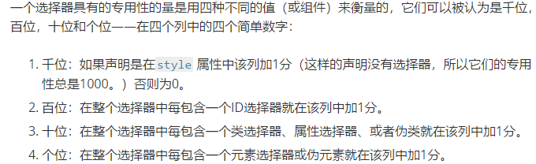

目录
1.背景介绍
2.知识剖析
3.常见问题
4.解决方案
5.编码实战
6.扩展思考
7.参考文献
8.更多讨论
CSS规则有两部分构成：选择器和一组属性声明
selector {property: value;property: value;}
选择器是一种模式，它能在页面上匹配一些元素，使相关的声明仅被应用到被选择的元素上。
一个选择器可以作用在多个元素，多个选择器作用在一个元素，最终应用的样式根据层叠算法决定。
一 命名
二 分类
三 优先级
W3C CSS2.1的 4.1.3 节中提到：标识符（包括选择器中的元素名，类和ID）只能包含字符[a- zA-Z0-9]和ISO 10646字符编码U+00A1及以上， 再加连字号（-）和下划线（_）；它们不能以数字，或一个连字号后跟数字为开头。
语义化命名
JS交互
document.getElementById(id) document.getElementsByClassName(class)
使用样式表现结果命名
1.元素选择器——elementname
2.类名选择器——.classname
3.ID选择器——#idname
4.属性选择器——[attr]
5.伪类选择器——:pseudo-class
6.伪元素选择器——::pseudo-element
7.组合选择器——> + ~
<a href="" target="" >
<img src="" alt="">
<p lang="">
:link :visited :hover :active 定义超链接样式
:nth-child :nth-of-type 列表的斑马纹
:checked :required :focus form相关
::after ::before
::first-letter ::first-line
CSS三大特性—— 继承、 优先级和层叠。 继承：即子类元素继承父类的样式; 优先级：是指不同类别样式的权重比较; 层叠：是说当数量相同时，通过层叠(后者覆盖前者)的样式。
CSS 定义了哪个规则比其它规则更具优先级，则更具优先级的规则必定被应用：这被称为层叠算法（cascade algorithm）
全局优先级：内联样式 > 内部样式 > 外部样式表
局部优先级
#id > .class|[attr]|:pseudo-class > element|::pseudo-element
!important
10个class和1个id优先级对比
CSS选择器是从右往左解析的
从右向左的匹配在第一步就筛选掉了大量的不符合条件的最右节点（子节点）；而从左向右的匹配规则的性能都浪费在了失败的查找上面。
css选择器使用强烈建议采用低权重原则，利于充分发挥css的继承性，复用性，模块化、组件化。
@charset 和 @import （元数据） @media 或 @document （条件信息，又被称为嵌套语句) @font-face （描述性信息）
嵌套语句 是@-规则中的一种，它的语法是 CSS 规则的嵌套块，只有在特定条件匹配时才会应用到文档上。
@media (min-width: 801px) {
body {
margin: 0 auto;
width: 800px;
}
}
感谢大家观看
BY : 陈占乐